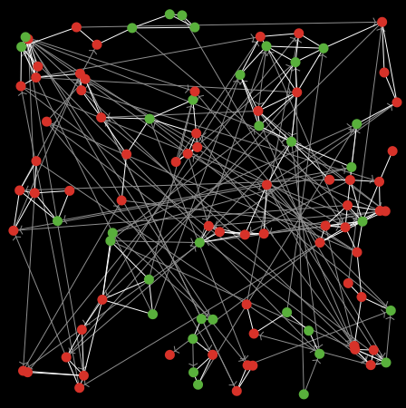
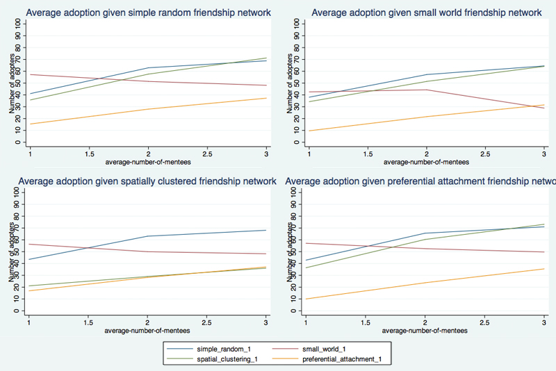

When a new prescription drug is introduced the main actors involved are the doctors, the patients, and the pharmaceutical companies. The interactive behavior among these three groups determines the adoption of a new drug. In this project, we focus on the prescription behavior by doctors and how this is impacted by their social networks. This approach was inspired by an empirical paper by Coleman, Katz & Menzel (1957) that shows that doctors are affected by both their friendship ties as well as by the behaviors exhibited by their mentors. To capture these two distinct processes of social contagion, we impose two different networks on the agents in our model. We vary the structure of these networks to explore how they interact in determining the diffusion of a new drug.
We are focusing on the impact of social ties on the decision by doctors to prescribe a newly introduced prescription drug. This is particularly relevant if the current treatment and the new drug are equally effective and given homogenous patients and full information. This suggests that the feedback doctors receive from patients would not be helpful in determining whether to prescribe the new drug. Equally, we assume that pharmaceutical companies do not try to influence doctor behavior (although the initial uptake, which is exogenous to our model, could certainly be seen as a function of either behavior by the pharmaceutical companies or patients). Although these assumptions are restrictive, they allow us to focus on the interaction of two distinct influence networks on the spread of a new drug.
We have a set of n actors. Each actor has friendship ties and mentorship links as determined by the network processes described below. To capture initial adoption, we randomly pick a actors and assign them to be adopters. This means that the remaining n-a actors still use the current drug at the beginning of our model. This results in an initial adoption rate of a/n.
Every time period doctors decide which drug (old or new) to prescribe to their patients. This decision depends on the prescription behavior in the previous time period by their friends and their mentors. Every time period, if actors prescribed the old drug in the previous time period, they calculate the percentage of their friends (i.e. actors to whom they are linked in the friendship network) who prescribed the new drug in the previous period. If this is greater than a given threshold p then actors will prescribe the new drug. (Note: This threshold is universal, i.e. actors are homogenous with respect to the threshold.) Equally, if actors have a mentor (in other words, an in-neighbor in the mentorship network) who has adopted the new drug, they will also choose to prescribe the drug in the next period. Actors may also be swayed to discontinue their use of the new drug. Each period, actors who prescribed the new drug in the last time period look up to their mentors. If these do not prescribe the new drug, the "mentee" will choose to resort back to the old drug. All updating, within the group of prescribers/non-prescribers, is simultaneous.
In the experiments conducted below, doctors using the old drug update their prescription choice before prescribers of the new drug do. The order of updating is potentially key (dependent on parameter values) in contagion models and is therefore also important here. Systematically varying the updating order is thus an important possible extension.
The significant difference between these networks is that links in the friendship network are undirected - drug adoption may spread between any connected actors. In contrast, the mentorship network consists of directed links: mentors will affect "mentees" but not vice versa.
We explored four different structures for the friendship and mentorship networks each: simple random, small world, spatially clustered, and preferential attachment networks. When combined, these give us 16 possible influence networks.
The simple random networks were constructed by selecting nodes at random and letting them form connections to other randomly selected nodes. This process was repeated until n*(average-number-of-friends)/2 or n*(average-number-of-mentees) connections were made.
The small world networks were constructed following the Watts-Strogatz algorithm. We first constructed a ring lattice in which each node was connected to the (average-number-of-friends)/2 or (average-number-of-mentees) neighbors to their left and their right. We then iterated over the links and with probability of 0.1 rewired them to another randomly selected node.
The spatially clustered networks were constructed by first randomly distributing the nodes on a lattice and then randomly selecting nodes to connect to the closest node with which they do not already have a link.
The preferential attachment networks were constructed by first sequentially numbering all nodes and then letting each subsequent node make a connection to any node with a smaller number with probability proportional to the nodes' degrees. If the desired average node degree was larger than one, we let the remaining links be constructed according to the simple random network algorithm.
For the current sets of experiments we explore contagion on networks with 100 nodes/doctors (n = 100). There are five initial adopters of the new drug (a = 5). Threshold,p, values are varied from 0.3 to 0.7 by an increment of 0.1. We explore friendship networks with average number of friends between 3 and 7. Finally, we vary the average number of "mentees" individuals have from 1 to 3.
Regardless of the structure of the friendship network, the average rate of adoption of the new drug is the lowest when the mentorship network is highly centralized, as in the preferential attachment network. This is also the situation with the highest rate of convergence to equilibrium, as well as with the highest variance in outcomes, practically bimodal, ranging from no adoption and full adoption. The explanation for this result is that our computational experiment starts by randomly selecting the initial adopters. If it happens so that the initial adopters are influential mentors, the drug quickly spreads among all doctors. However, if the initial adopters are non-influentials, the popularity of the drug never picks up. This insight is particularly relevant for pharmaceutical companies when they consider whom to target when they wish to introduce a new drug.
The average rate of adoption at equilibrium is also relatively low when both the friendship and mentorship networks are spatially clustered. This situation corresponds to a tightly knit small community, such as in a rural hospital or clinic. These are also the networks which require the longest time to reach equilibrium. In these networks, contagion spreads readily because friendship and mentorship networks overlap but it requires a long time to reach all possible corners of the network. Additionally, if a cluster exists around a conservative mentor who resists adopting the new drug, no member of that cluster will adopt the new drug. As a result, communities of adopters and non-adopters coexist and the new drug rarely achieves a significant share of the market.
For any given threshold level, as the average number of friends increases the adoption of the new drug declines. This is a function of doctors prescribing the new drug in reaction to a given percentage of their friends also prescribing the drug. Hence, as the number of initial adopters, a, remains constant, it is less likely that the adoption threshold will be met as the number of friends grows.
In general, the denser the mentorship network, the higher the adoption of the drug. This is not surprising since mentors have strong influence on doctors' behavior. Surprisingly, however, a higher average number of mentees per mentor does not affect the spread of the drug when the mentorship and friendship networks are both small world networks.
There are a number of possible valuable extensions to the current model. First and foremost, changes in the updating order should be explored. In connection to updating rules, one can also investigate situations in which less weight is given to the opinion of the mentor. Another possibility is to look at possible correlations between network position and susceptability to influence. A further natural extension would be the inclusion of patients and pharmaceutical companies in determining a doctor's prescribing behavior.
Given the prevalence of social networks and, in particular, multiple, possibly competing networks, our model is broadly relevant to numerous social situations where social influence is likely to impact binary behavior - e.g. a decision to join a revolution, fashion choices, etc. One interesting application is in relation to the recent discussion on the causes of the Arab Spring uprisings. One prominent view is that the Arab Spring was a Twitter/Facebook revolution. A competing hypothesis is that it was Al Jazeera and affiliated opinion leaders who were most influential. Our model can be used to investigate the Arab Spring uprisings or similar situations in which peer networks and opinion-leader networks compete and interact.